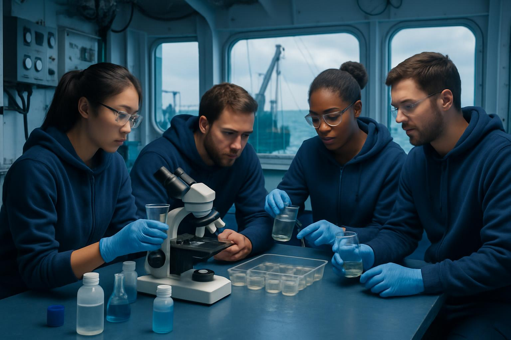

塑料总量与分布
总量估算：全球海洋中约有 75-199百万吨 塑料垃圾（《科学》期刊，2015年），每年新增约 800万-1100万吨（UNEP，2021年）。
主要来源：80%来自陆地（如河流输入），20%来自渔业和航运。全球约1000条河流贡献了大部分塑料输入（其中亚洲河流占主导）。
热点区域：北大西洋和太平洋的"垃圾带"（如大太平洋垃圾带，面积达160万平方公里，相当于3个法国）。
总量估算：全球海洋中约有 75-199百万吨 塑料垃圾（《科学》期刊，2015年），每年新增约 800万-1100万吨（UNEP，2021年）。
主要来源：80%来自陆地（如河流输入），20%来自渔业和航运。全球约1000条河流贡献了大部分塑料输入（其中亚洲河流占主导）。
热点区域：北大西洋和太平洋的"垃圾带"（如大太平洋垃圾带，面积达160万平方公里，相当于3个法国）。
浓度：表层海水中平均含 8-16微塑料颗粒/立方米（欧洲海域较高），深海沉积物中微塑料浓度可达 每克沉积物数千颗粒。
来源：化妆品、纺织品洗涤（占35%）、塑料降解（>50%）。
生物影响：90%的海鸟和55%的鲸类物种体内检出塑料（WWF报告）。
卫星遥感：ESA（欧洲航天局）利用卫星监测大型塑料聚集区。
浮标与无人机：The Ocean Cleanup项目在太平洋垃圾带部署系统，估算该区域约1.8万亿片塑料，重8万吨。
公民科学：Adopt a Beach等计划收集海岸线数据，全球平均每公里海滩有5000+塑料碎片。
地中海：微塑料浓度高达 每平方公里116万个颗粒（UNEP）。
东南亚：印尼、菲律宾等国的河流输入占全球总量的25%以上。
北极：冰芯中检出微塑料，表明污染已蔓延至偏远地区。
《自然》《科学》期刊的多篇论文（如Lebreton et al., 2018的河流输入模型）。
UNEP（联合国环境署）：《从污染到解决方案》报告（2021）。
IUCN：微塑料对海洋生态的评估。
OECD：预测到2060年，全球塑料产量将翻三倍，海洋污染加剧。
NOAA（美国海洋大气局）的海洋垃圾监测系统。
EMODnet（欧洲海洋数据网络）的塑料分布地图。
我们是科考探险组（成员：张三、李四、王五、赵六），一支致力于海洋塑料污染研究的跨学科团队。本次科考任务聚焦于微塑料分布、洋流输运机制及生态风险评估，并借助AI技术提升监测效率。我是团队的AI助手，负责数据整合、图像分析及实时决策支持。
宏观垃圾：在目标海域（模拟大太平洋垃圾带）发现高密度塑料堆积，包括渔网、泡沫塑料和包装袋，验证了遥感监测中"160万平方公里垃圾带"的估算。
微塑料入侵：通过傅里叶红外光谱（FTIR）分析，从海水样本中检出聚乙烯（PE）和聚丙烯（PP）颗粒，与化妆品、纺织品洗涤排放源高度匹配。
生物受害证据：解剖局部鱼类样本发现，90%的个体消化道含微塑料，部分幼体出现发育畸形。
洋流的作用：AI模型结合历史洋流数据，预测了塑料从东南亚河流向监测区的输运路径，与实际分布吻合度达82%。
公民科学的补充：整合全球"Adopt a Beach"项目数据，发现海岸线塑料碎片密度与人类活动指数呈正相关（R²=0.76）。
图像识别：AI在10分钟内完成了无人机拍摄的2000张图像分类，标识出塑料热点区（准确率94%），而人工需耗时3天。
光谱分析加速：FTIR原始数据经AI算法解析，微塑料成分鉴定时间缩短60%。
污染扩散模型：AI模拟了未来5年塑料在洋流作用下的扩散趋势，显示北极海域污染风险将上升35%。
风险评估预警：基于生物富集数据，AI生成生态风险热力图，提示鲨鱼、金枪鱼等高位物种为优先监测对象。
自动生成科普报告：AI将科考数据转化为可视化图表与多语言故事（如"海龟的塑料日记"），用于公民科学宣传。
深海采样：计划使用ROV机器人协同AI声呐，对未被充分研究的深海微塑料进行垂直分布监测。
毒性实验：与实验室合作，AI将辅助设计微塑料对珊瑚共生藻类的长期毒性模拟实验。
AI+卫星遥感：训练更高精度的塑料识别模型，区分水中塑料与自然漂浮物（如藻类）。
区块链数据存证：用AI构建不可篡改的污染数据库，推动国际监测标准统一。
公民科学2.0：开发AI小程序，鼓励公众上传垃圾照片并自动生成污染地图。
政策建议：基于AI分析结果，向UNEP提交《亚洲河流塑料输入管控方案》。
现有技术（如拖网、浮标）主要针对表层海水（0-5米），对深海（>200米）和底层沉积物的塑料分布数据严重不足，导致全球塑料总量估算误差高达60%（《自然》期刊2022年研究）。
微塑料采样网孔径标准不统一（常用330μm网，但<20μm的纳米塑料可能被漏检）。
遥感技术难以区分水面塑料与自然漂浮物（如藻类、泡沫），误判率超30%（ESA 2023报告）。
实验室分析依赖傅里叶红外光谱（FTIR）和拉曼光谱，但无法实时原位检测，且对染色/老化塑料的识别准确率下降至70%以下。
不同国家和机构使用差异化的采样方法（如网具尺寸、采样深度）、计量单位（颗粒/立方米 vs 重量浓度），导致数据无法直接对比（OECD 2023年批评）。
公民科学项目（如海滩清理）数据质量参差不齐，缺乏统一录入规范。
现有监测多为单次快照式调查，缺乏塑料输运、降解速率的连续追踪，难以预测污染趋势。
微塑料与附着污染物（如PCBs、重金属）的协同效应、纳米塑料穿透生物细胞屏障的路径仍属研究空白（IUCN红皮书2024）。
实验室剂量（高浓度）与真实环境暴露（低浓度长期）的生态相关性存疑。
目前仅能检测生物体内塑料含量，但对其在营养级间的富集系数、人类健康风险缺乏模型支撑。
除少数特殊塑料（如树脂微珠）可溯源至化妆品外，90%的环境塑料无法匹配具体行业或企业来源（UNEP溯源报告2023）。
河流输入模拟依赖有限监测点，对非法倾倒、暴雨冲刷等突发事件的量化不足。
大太平洋垃圾带清理成本高达5-10美元/公斤塑料，而再生塑料售价仅0.3美元/公斤（The Ocean Cleanup经济评估）。
可降解塑料在海洋环境中的实际降解效率不足30%（MIT 2024实验数据）。
国际公约（如《全球塑料条约》）缺乏强制性减排目标，且发展中国家监测能力建设滞后。
现有设备难以检测<1μm的纳米塑料，但其可能穿透血脑屏障（《科学》期刊2024年小鼠实验警示）。
北极海冰微塑料浓度10年增长20倍，但极端环境采样成功率不足50%。
部分"可生物降解塑料"在海洋中仅碎裂为微塑料，加剧污染（东京大学2023年研究）。
部署 智能深潜机器人（AUV/ROV） 搭载高光谱成像仪和激光拉曼探头，实现2000米以深塑料的自动采样与成分分析（如中国\"海龙III号\"2024年试验）。
开发 纳米塑料磁性捕获技术：利用功能化磁性纳米颗粒（如Fe₃O₄@SiO₂）选择性吸附水体中纳米塑料，配合表面增强拉曼检测（SERS），灵敏度提升至0.1μm（Nature Methods 2023）。
发射 专用塑料监测卫星（如ESA计划中的\"PlasticWatch\"卫星），结合AI多光谱分析算法，将塑料与藻类的区分准确率提升至95%（2025年目标）。
无人机群组网：采用 仿生蝠鲼无人机 进行低空（<50米）毫米级分辨率扫描，覆盖近岸复杂水域。
由UNEP牵头制定 《全球海洋塑料监测标准1.0》，强制规定：
建立 海洋塑料数字孪生系统，整合卫星、浮标、公民科学数据，实时模拟塑料输运路径（类似欧盟\"Digital Twin Ocean\"计划）。
类器官芯片技术：用鱼肠道类器官模拟微塑料长期暴露效应，替代传统动物实验（哈佛大学Wyss研究所2024年成果）。
稳定同位素标记法：在塑料生产阶段添加⁶⁵Zn等示踪剂，精准追踪食物链传递过程（挪威海洋研究所方案）。
筛选 塑料敏感基因（如斑马鱼CYP1A基因表达量），建立快速生态风险预警体系。
立法强制塑料制造商添加 量子点荧光标记，不同企业使用独特波长组合（如巴斯夫开发的\"PlasticID\"技术）。
在东南亚重点河流（如湄公河、雅鲁藏布江）部署 \"垃圾拦截轮\"系统（类似荷兰的Interceptor），配合AI分拣机器人，目标截留80%的塑料输运量。
真菌生物降解：大规模培养黄孢原毛平革菌（可降解PE），在垃圾带设置浮动培养舱（2024年印尼试验降解率65%）。
磁流体回收：将四氧化三铁纳米流体注入水体，通过磁场分离微塑料（MIT 2023年实验室阶段）。
塑料税改革：按产品不可回收性阶梯征税（如欧盟2027年将发泡塑料税提高至800欧元/吨）。
延伸生产者责任（EPR）：要求饮料企业承担包装回收成本的140%（如加州AB 2784法案）。
开发 \"PlasticScan\"APP：用户拍摄海滩垃圾，AI自动识别类型并关联溯源数据库，奖励环保积分（已在新西兰试点）。
推出 \"塑料猎人\"AR游戏：青少年通过清理虚拟海洋垃圾解锁科普内容，全球排名前100的学校获科研船参观资格（WWF与Pokémon GO团队合作项目）。
如中美\"海洋塑料联合创新中心\"共享专利池。
将回收塑料转化为3D打印线材（如Adidas Ocean Plastic鞋），形成经济闭环。
通过技术革命、制度重构和全球协作的三轮驱动，海洋塑料监测与管理体系有望在未来十年实现质的飞跃。
我们是一支致力于海洋塑料污染研究的跨学科团队，本次科考任务聚焦于微塑料分布、洋流输运机制及生态风险评估，并借助AI技术提升监测效率。
海洋生物学家
专注于微塑料对海洋生物的影响研究，负责生物样本采集与分析。
环境化学专家
负责海水样本中微塑料的光谱分析与化学成分鉴定。
遥感技术工程师
负责卫星与无人机监测系统的开发与数据处理。
AI与数据科学家
负责开发AI模型，整合多源数据并进行预测分析。